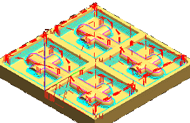

Reduce the depth per cut and specify the range depth
-
Make sure Common Depth per Cut is set to Constant.
-
In the Maximum Distance box, type 0.10.
You need to verify that the depth of the cavities matches the defined Range Depth.
-
Click Cut Levels .
The current range depth is defined by the depth of the cut area geometry and should be 1.0000.

-
Click OK.
-
In the Zlevel Profile dialog box, in the Actions group, click Generate
 .
.
Notice that the tool path completely machines a region from the top to the bottom before traversing to the next region. Only the steep areas are machined.

-
Click OK to complete the operation.
The ZLEVEL_PROFILE operation is at the end of the program. It needs to be moved to a different position in the program.